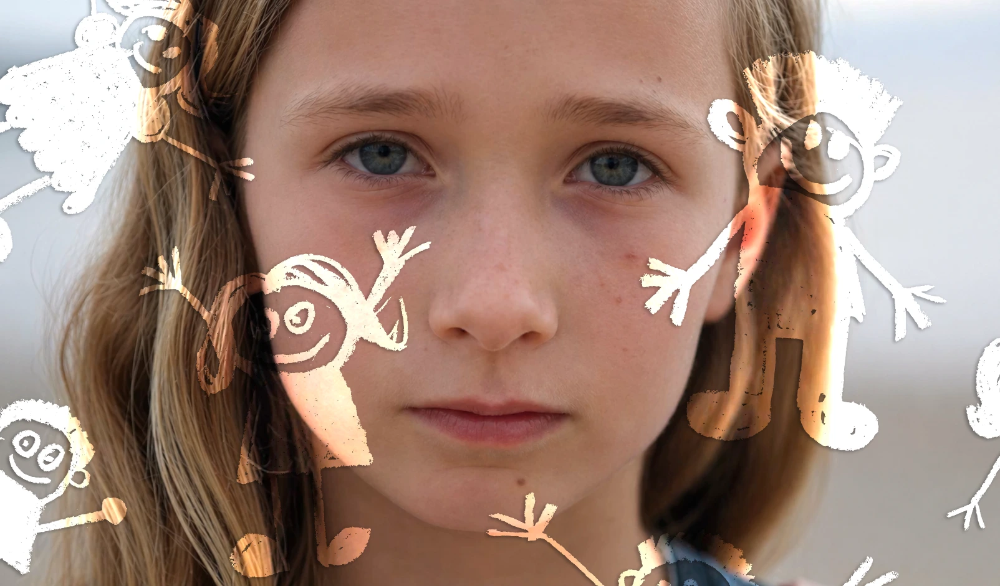
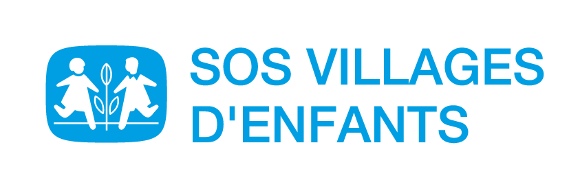
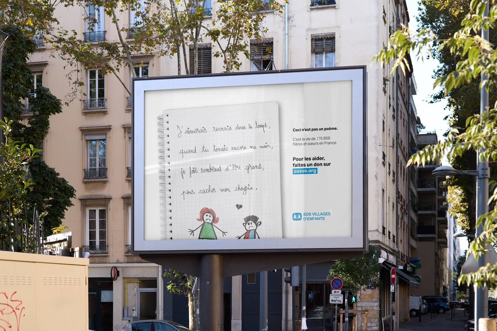
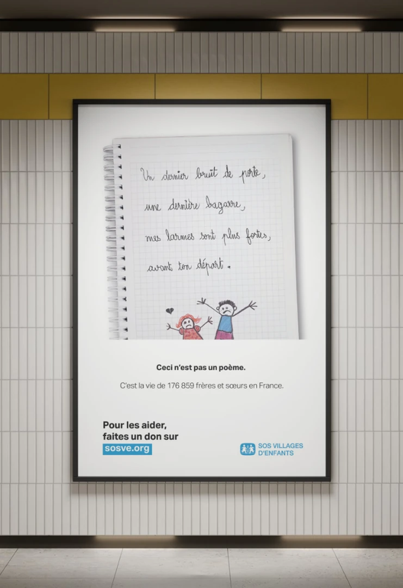
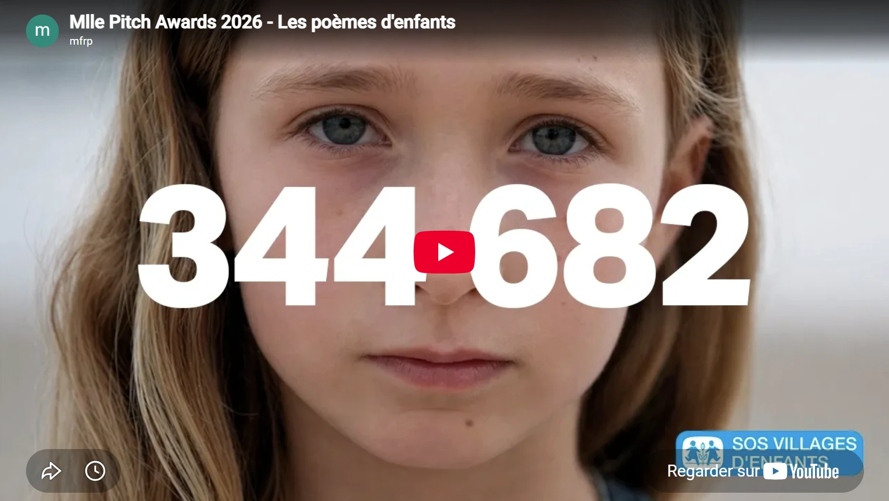
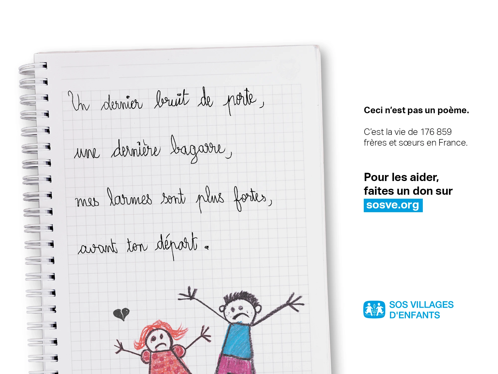
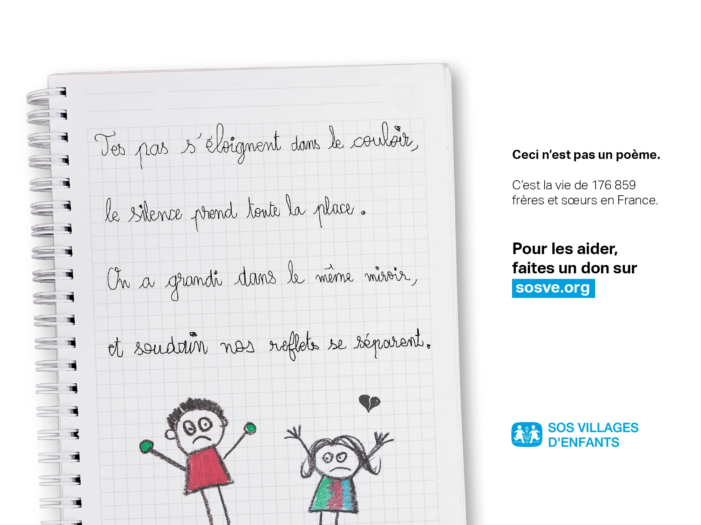
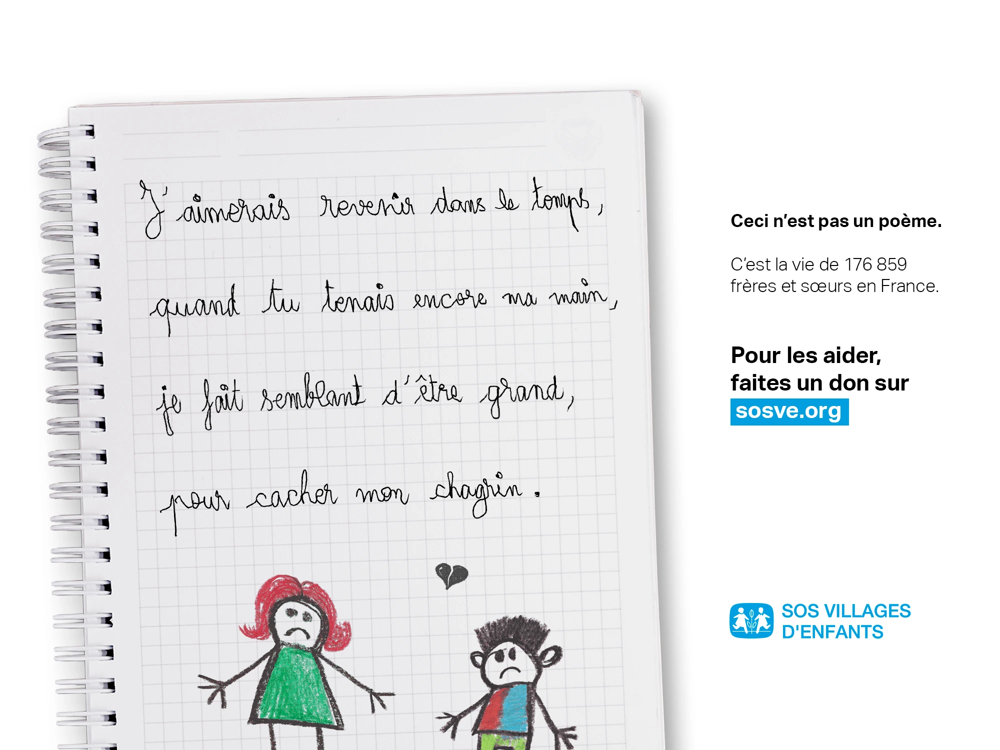

Un Poeme pour Toi
Direction artistique · Campagne · Print · Digital · Social media · Motion · Vidéo

ClientSOS Villages d’Enfants
Un Poeme pour Toi est une campagne fictive conçue pour le concours Mlle Pitch 2026. Elle sensibilise à la séparation des frères et sœurs lors d’un placement en s’appuyant sur la poésie comme vecteur émotionnel et narratif.
Le projet réunit une case study vidéo, des affiches et mockups de campagne, plusieurs poèmes illustrés ainsi que des déclinaisons sociales et un filtre Snapchat interactif. L’ensemble défend une prise de parole sensible, juste et engageante, capable de faire exister le message sur différents supports sans l’appauvrir.
Shortlisté par le jury du concours Mlle Pitch 2026.





